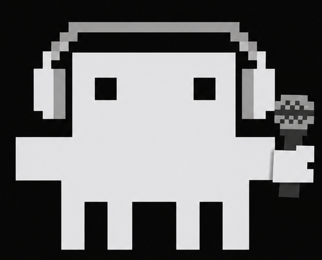

Connect Claude Code
Checking Claude Code…

claudibleA viewer opened your link and is asking to join your terminal. Only approve if it’s the person you gave the link to.
Pick a display name so the people you invite know it's you.
A project points Claude at a folder — it works there, you review and revert. Start private or shared; change it later from the ▾ menu.
.claude/ (git-ignored locally, never committed). If it already has a .claude/settings.json, your copy is saved as settings.json.pre-claudible.Add a GitHub user as a push collaborator on . They'll get a GitHub invite to accept, then can push to the repo.
Turn on collaboration for . Everyone with push access to this repo will then see and resume the same conversations (synced automatically), and can Join your sessions live — no link to send. It runs quietly in the background; the bottom-left “Share a live link” button stays for inviting people without Claudible over the web. Heads up: this commits your transcripts — including anything Claude read during them (file contents, secrets, command output) — into the private repo's history. It stays on until you turn it off.
Search Anthropic's official plugins (they can bundle skills, agents & commands). Installing runs in your terminal so you can approve it.
Claudible runs on a few tools. We'll check for them and install whatever's missing — you only sign in to the ones that truly need it.
Checking Claude Code…